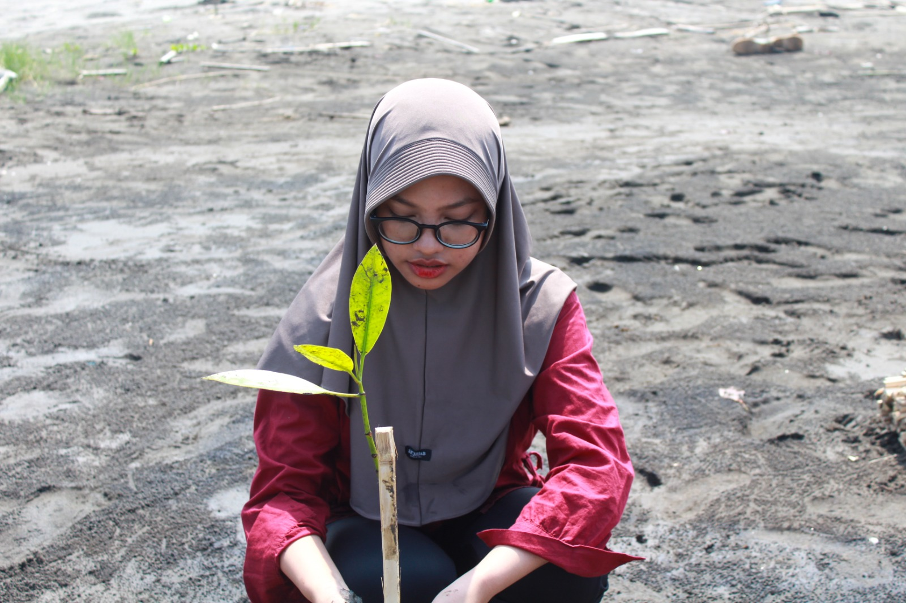

Resume
Pendidikan
Universitas Budi Luhur
Mahasiswa Informatika
Sedang menempuh pendidikan Sarjana Informatika dengan fokus pada pengembangan perangkat lunak, basis data, dan kecerdasan buatan.
SMK AN-Nurmaniyah
Jurusan Multimedia
Mempelajari desain grafis, editing multimedia, dan dasar-dasar pengembangan media digital.
Pengalaman Organisasi

One Day Kebudiluhuran
Mei 2025 • Universitas Budi LuhurBerperan sebagai panitia kegiatan One Day Kebudiluhuran dan membantu pelaksanaan workshop untuk siswa SMK di Universitas Budi Luhur.

Acara Bakti Sosial
Juli 2025 • Kuningan, Jawa BaratBerpartisipasi dalam kegiatan bakti sosial sebagai bentuk kepedulian terhadap masyarakat dan lingkungan sekitar.
lihat Dokumentasi
Penanaman Mangrove
Juli 2025 • IndramayuMengikuti kegiatan penanaman mangrove sebagai kontribusi terhadap pelestarian lingkungan.
lihat DokumentasiKeahlian
Web Development
HTML • CSS • bootstrap • PHP • MySQLMasih dalam tahap belajar pengembangan web melalui praktikum, tugas perkuliahan, dan proyek sederhana.
Data & AI
Python • RapidMiner • Machine LearningMemiliki pengalaman dasar dalam pengolahan data dan machine learning melalui perkuliahan.
Design
Figma • Canva • Adobe IllustratorMenggunakan Figma dan Canva untuk kebutuhan desain sederhana dan presentasi.
Tools
VS Code • GitHub • XAMPPMenggunakan berbagai tools pendukung untuk coding, dokumentasi, dan pengembangan proyek.